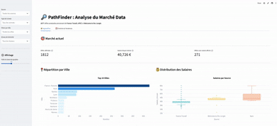

Amélie Tran / Portfolio
Ancienne mixeuse et technicienne son, je transpose aujourd'hui ma rigueur technique et mon analyse du signal vers le monde de la Data. Ce portfolio regroupe mes travaux réalisés durant mon bootcamp à la Wild Code School.
Mes Projets

PathFinder : Monitoring Emploi Data
Pipeline ETL autonome qui scrappe, dédoublonne et centralise les offres Data Junior en France.
À propos
Le mixage audio m'a appris à gérer des flux complexes et à traquer le moindre "bruit" parasite. Aujourd'hui, j'applique cette même exigence au nettoyage de données (ETL) et à l'analyse métier.
Dépôts & Analyses
Recommandation de Films
Développement d'un moteur de recommandation basé sur la similarité cosinus pour suggérer des films aux utilisateurs.
Analyse Commerce de Vélos
Analyse de performance commerciale (KPIs, saisonnalité, marges) via SQL et dashboarding interactif.
Santé & Nutrition
Nettoyage massif et exploration de données nutritionnelles pour identifier des corrélations entre nutriments et scores de santé.
Analyse de l'Animation Japonaise
Étude statistique sur l'évolution du marché des Animes à travers le temps et analyse des préférences communautaires.
Boutique de Maquettes
Analyse de la chaîne logistique et optimisation de la rotation des stocks pour une boutique spécialisée.